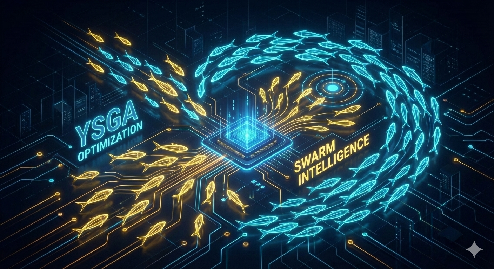

Proyectos Destacados

YSGA-PyRust
R&D y OptimizaciónLibrería híbrida de metaheurísticas para VRP. Aceleración 50x vs Python puro usando bindings de Rust y paralelismo.
Ver en GitHub
API Fleet 2.0
Logística Analytics & AWS Serverless
Visión de Negocio: Transformación de telemetría vehicular en un producto de valor agregado que ofrece trazabilidad total a clientes finales, reduciendo significativamente la carga operativa del equipo de monitoreo.
Implementación: Diseño de una arquitectura orientada a eventos para procesar flujos de datos en tiempo real y proporcionar información crítica de las unidades asignadas.

Auditoría Inteligente
AutomationEcosistema de automatización documental. Extracción OCR/NLP para auditoría comercial y compliance normativo.
Ver Arquitectura